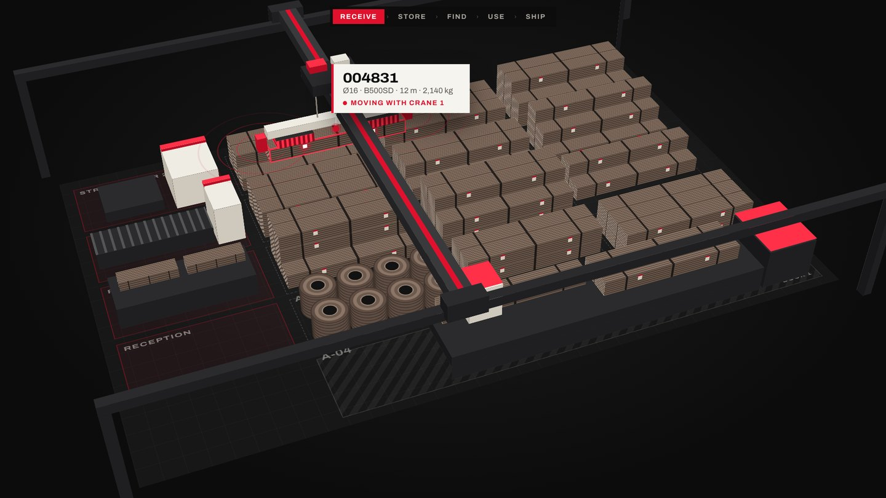
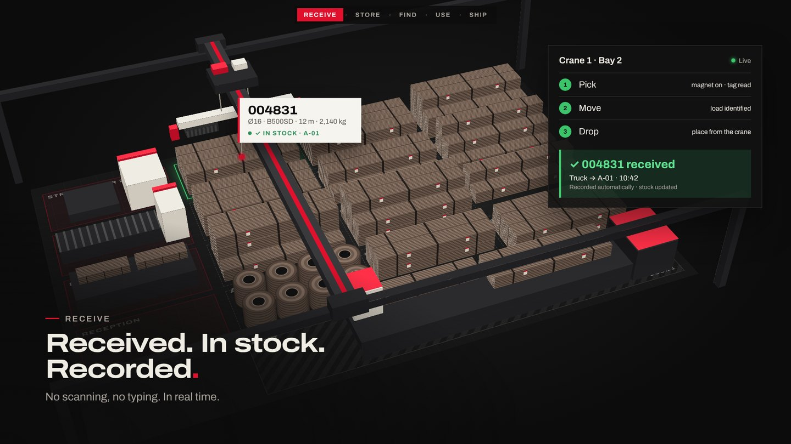
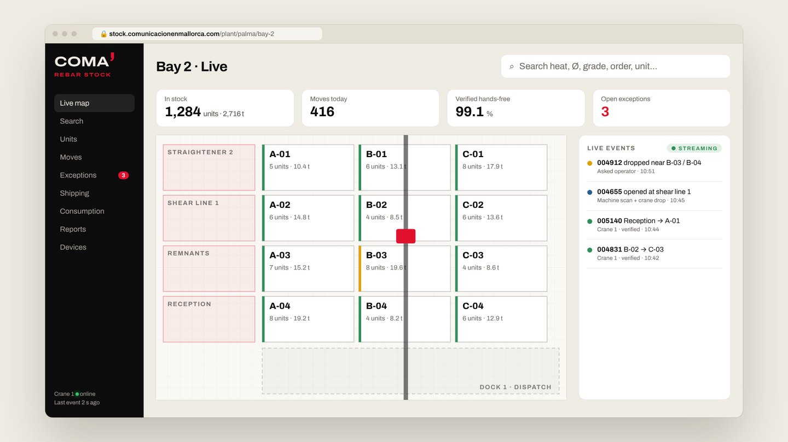
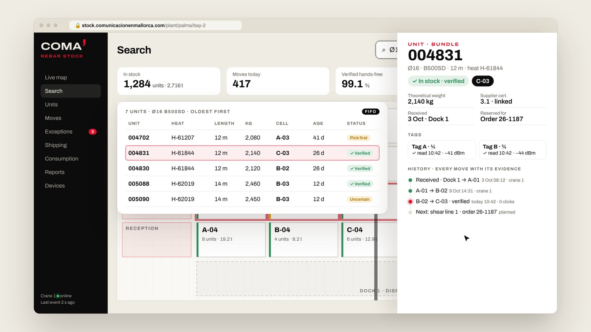
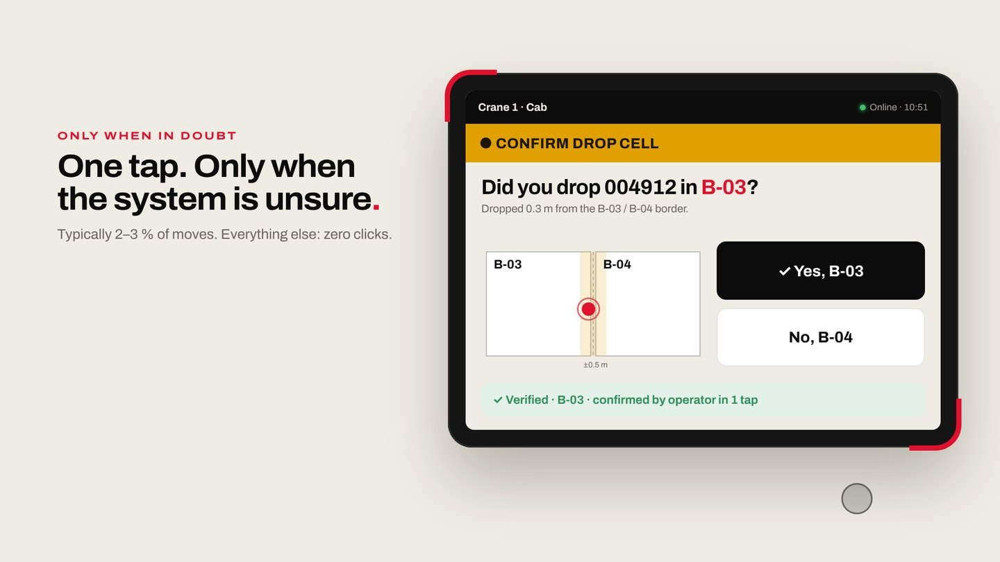
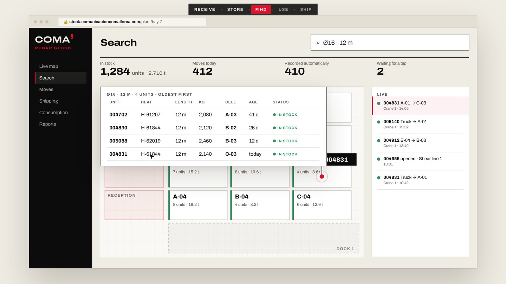
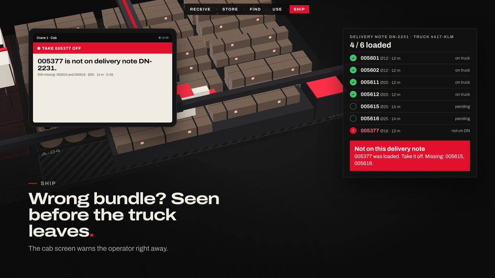
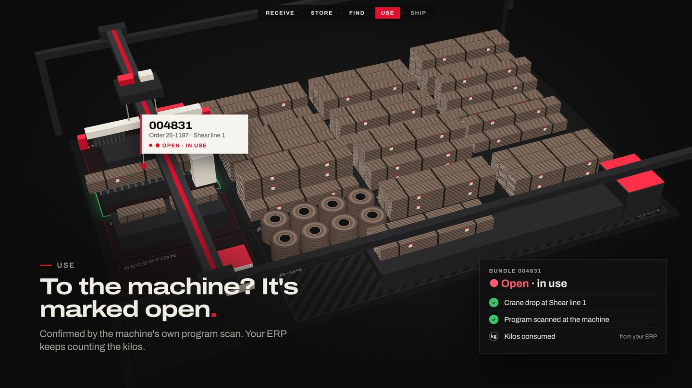
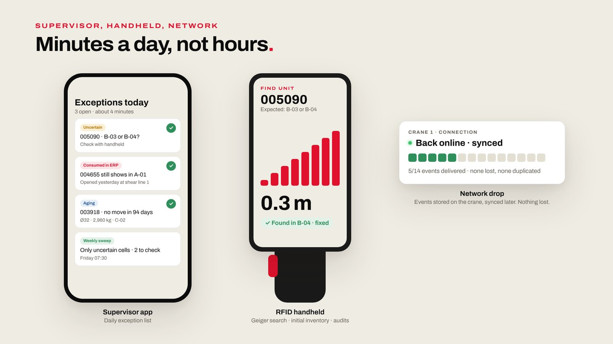

Nota sobre cifras. Todos los precios son orientativos, en euros y sin IVA, y se confirmarán con cotizaciones cerradas de proveedores tras la Fase 0. Los porcentajes de acierto son objetivos del piloto que se miden y se escriben en el contrato, no resultados garantizados de antemano.
El cliente quiere saber en tiempo real qué stock de rebar tiene, dónde está (por calle o celda), qué entra, qué sale y qué está abierto. Ya probó el escaneo manual (paquete + ubicación) y no le sirve: depende de que el operario lo haga, y no siempre lo hace, o lo hace mal. Necesita que el registro sea automático aunque el operario no colabore.
Una pila de acero no se puede leer de forma fiable con radio ni con cámaras. Pero cada paquete o rollo, para moverse, tiene que colgar de la grúa. En ese momento está separado de la pila y se lee bien. El operario puede olvidarse de escanear; no puede mover material sin la grúa.
RFID UHF pasivo con etiqueta colgante tipo bandera, leído desde la grúa que mueve el material, no desde las pilas. La ubicación la da la posición de la grúa al dejar la carga. Una sola tecnología: sin cámaras ni GNSS.
La carretilla queda como módulo opcional (+16.000 a 30.000 €), con la misma lógica y la misma plataforma, para cuando se quiera cubrir calles exteriores o zonas sin grúa.
Inventario perfecto sin ninguna excepción, posición exacta dentro de una pila, ni cantidad en kg medida por RFID (la calcula el ERP). Sí se promete, sujeto a superar los criterios del piloto: registro automático, ubicación por celda, excepciones visibles en minutos y un stock que cuadra.
| Unidad | Características | Cómo se manipula |
|---|---|---|
| Paquetes de barras | Normalmente de 6 a 14 m y de 1 a 3 t, atados con alambre. Un paquete de 2 t vale unos 1.400 €. | Puente grúa con electroimán, balancín con cadenas o gancho. |
| Rollos / bobinas | Alambrón o corrugado para enderezadoras y estribadoras, de 1 a 5 t, con flejes. También bobinas tipo spool. | Electroimán, gancho en C o pinza. |
| Restos y paquetes abiertos | Material parcialmente consumido que vuelve al almacén. | Igual que el resto, con etiqueta nueva vinculada. |
| Ferralla elaborada | Barras cortadas y dobladas, atadas por pedido o elemento, listas para expedir. | Grúa hacia la zona de expedición o al camión. |
Se almacena en nave y/o patio exterior, en plantas pequeñas y grandes, siempre apilado. Ambiente: polvo, óxido, golpes, lluvia, sol y noche.
El cliente ya intentó resolverlo con escaneo manual y celdas pintadas. No falló la tecnología del escáner: falló depender de una persona ocupada. La propuesta elimina ese paso, en lugar de pedir más disciplina.
| P1 | Leer el material solo cuando está separado de la pila: colgando del imán, de las cadenas o del gancho. |
| P2 | La ubicación la da la grúa en el momento de dejar la carga, no una lectura del paquete ya depositado. |
| P3 | Una sola tecnología de identificación: RFID UHF pasivo (banda europea 865–868 MHz, potencia máxima 2 W ERP según EN 302 208). |
| P4 | El operario trabaja exactamente igual que hoy. Solo interviene si el sistema duda, con un toque. |
| P5 | El sistema nunca inventa un dato: cada movimiento y cada unidad tienen un estado explícito. |
| P6 | Solo lectura respecto a la grúa: no interviene en sus controles ni en sus funciones de seguridad. |
| P7 | COMA es dueña del modelo de datos y del contrato de eventos. El hardware lo suministra e instala un integrador que se puede cambiar. |
| P8 | El RFID dice qué y dónde. El ERP/MES dice cuánto (kg) y en qué estado de consumo. |
| # | Componente | Detalle |
|---|---|---|
| 1 | Etiqueta bandera UHF | Plástico industrial resistente a intemperie, aceite y desgarro (aprox. 101,6 × 105 mm), con perforación de plegado: la mitad con el chip queda separada del acero como una bandera. Inlay UHF estándar (UCODE 8, TID de 96 bits bloqueado de fábrica), taladro para brida o alambre y perforación de corte entre etiquetas. Se imprime por transferencia térmica con su cinta específica. Datos de hoy + QR/DataMatrix grande como respaldo. |
| 2 | 2 antenas direccionales | Polarización circular, a los lados del balancín o junto al imán, apuntando a la carga, con protección mecánica. Nunca bajo el imán. Posición final aprobada por el mantenedor de la grúa. |
| 3 | Lector UHF industrial de 4 puertos | En el carro, en carcasa IP65/66. 2 puertos de reserva para añadir antenas si la prueba lo pide. |
| 4 | PC industrial de borde | Guarda localmente todos los eventos si cae la red y los reenvía sin duplicados. |
| 5 | Comunicaciones | Puente WiFi industrial o router 4G, con indicador «sin conexión» en cabina. |
| 6 | Señales y posición (solo lectura) | Imán ON/OFF, subida/bajada o encoder de altura, traslación de puente y carro, carga si existe señal continua fiable (el limitador de sobrecarga no es una báscula). X/Y preferente desde PLC o encoders (Profinet, OPC-UA, Modbus) mediante contactos libres de tensión o pasarela. |
| 7 | Alternativa de posición | Si no hay PLC accesible: 2 telémetros láser de largo alcance (puente y carro) con reflectores, la solución habitual en parques de bobinas. |
| 8 | Interfaz en cabina | Tablet robusta: verde / amarillo / rojo y pregunta de un toque. Sin cabina: pantalla en la nave, baliza en el puente y aviso en el móvil del operario. |
| 9 | Útil de elevación | No se modifica. El sistema se adapta a imán, cadenas, gancho o gancho en C. |
| Unidad | Etiquetas | Dónde |
|---|---|---|
| Rollos y bobinas | 2, opuestas a 180° | Atadas a los flejes. |
| Paquetes de más de 6 m | 2 | A ¼ y ¾ de la longitud, atadas al alambre de atado (nunca a una barra suelta). |
| Paquetes de 6 m o menos | 1 | En el centro. |
| Restos que vuelven | 1–2 nuevas | Vinculadas a la unidad original (colada y certificado). |
La etiqueta llega en rollo (mandril de 76 mm, Ø exterior 185 mm), compatible con impresoras industriales RFID de 4". La impresora codifica y verifica el chip antes de imprimir y marca las defectuosas. Se imprime en el mismo paso que hoy: no hay ningún paso nuevo. Cada chip tiene su propio código (EPC) y la plataforma asocia los 1–2 EPC de cada unidad. La prueba RF decide si basta 1 etiqueta por paquete (en la referencia de laminador, los paquetes de barras llevan 1 porque no giran y los rollos 2), que es la principal palanca del coste recurrente.
La unidad básica es la celda o calle, no la coordenada exacta. En nave con grúa, las celdas se definen como polígonos sobre la X/Y de la grúa: no hacen falta placas en el suelo. También se definen celdas especiales: máquina X (consumo), camión / muelle X (expedición), recepción, carro de transferencia (tránsito) y estantería de restos.
Búsqueda de una unidad concreta (modo «geiger»), revisión de celdas inciertas, inventario inicial y auditorías del piloto.
La apertura se toma del escaneo que ya se hace en la máquina para cargar el programa, y se refuerza cuando la grúa deja la carga en la celda de esa máquina. No hacen falta lectores en las máquinas.
| 0 · Arranque | Se etiqueta y verifica todo el stock existente de la zona del piloto, con impresora y terminal de mano. El sistema arranca con un inventario inicial real. |
| 1 · Producir o recibir | Se imprime la etiqueta como hoy (ahora con RFID) y se ata. Ningún paso nuevo. |
| 2 · Coger | El gruista coge la carga como siempre. Las señales de la grúa marcan el inicio y las antenas leen la carga. |
| 3 · Desplazar | El sistema confirma qué etiquetas se mueven con la grúa y descarta las de las pilas vecinas. |
| 4 · Dejar | Fin del movimiento: la X/Y de la grúa asigna la celda. |
| 5 · Resultado | VERDE se registra solo. AMARILLO la cabina pregunta («¿Has dejado 004831 en B-07?») o pide elegir entre 2–3 opciones; sin respuesta en X minutos queda incierto en la lista del supervisor. ROJO hubo movimiento sin etiqueta fiable: se muestran candidatos de la zona de origen; sin respuesta, alerta al supervisor. |
| 6 · Consumir | El escaneo de la máquina (que ya existe) y/o dejar la carga en la celda de la máquina marcan la unidad como ABIERTA. Los kilos los calcula el ERP. |
| 7 · Material que vuelve | Etiqueta nueva vinculada a la unidad original. |
| 8 · Expedir | Carga en la celda del camión, baja automática y verificación contra el albarán. Si no coincide, alerta en cabina antes de que salga. |
| 9 · Mantener | El supervisor revisa cada día la lista de excepciones (minutos). Una vez por semana, barrido con el terminal solo en celdas inciertas. |
Comprobaciones de coherencia: origen (la última ubicación conocida está cerca del punto donde se cogió; si no, se acepta la identidad y se marca «origen inesperado»), pareja de etiquetas (leer los 2 EPC, o uno con señal fuerte, refuerza la identificación) y peso opcional (la suma de pesos teóricos del ERP coincide con la carga medida con un margen de ±10–15 %).
Imán OFF o bajada sin carga. Ubicación = celda que contiene la X/Y de la grúa. Si está a menos de 0,5 m del borde entre dos celdas, la ubicación queda incierta y se pregunta.
Confirmación al dejar: tras soltar, las etiquetas de la carga dejan de moverse con la grúa y se siguen leyendo, más débiles, mientras el gancho sube sobre ese punto. Esa firma confirma que la carga quedó ahí y no en una celda vecina. Si la grúa tiene báscula (opcional), el peso al coger y al soltar es una evidencia más, útil en elevaciones de varias unidades.
VERIFICADO INCIERTO_UBICACIÓN INCIERTO_IDENTIDAD SIN_IDENTIFICAR
EN_STOCK verificado EN_STOCK incierto EN_MOVIMIENTO ABIERTO CONSUMIDO EXPEDIDO NO_LOCALIZADO
Regla de oro: un dato no verificado nunca sustituye a uno verificado sin dejar constancia y sin generar una alerta. Con un 99,5 % de acierto por movimiento, un paquete que se mueve 10 veces quedaría con un 95 % acumulado; por eso el criterio clave es que las asignaciones falsas dadas por verificadas sean como máximo del 0,1 % y que los errores se detecten rápido por discrepancias.
El mundo del rebar no es un único caso. Esta sección recorre útiles, grúas, mandos, materiales, flujos, entornos y excepciones, y dice qué hace el sistema en cada uno y si entra en el piloto.
| Útil | Coger / dejar se detecta por | Antenas | Piloto |
|---|---|---|---|
| Electroimán (paquetes) | Imán ON/OFF + polipasto | 2 a los lados del balancín, protegidas | Referencia |
| Electroimán (rollos) | Imán ON/OFF + polipasto | Igual; 2 etiquetas a 180° aseguran lectura | Incluido |
| Balancín con imanes múltiples | Imanes ON/OFF + polipasto | En los extremos del balancín (paquetes de 12–14 m) | Incluido |
| Balancín con cadenas / eslingas | Subida con carga, señal de carga o tensión | En el balancín, apuntando abajo | Configurable |
| Gancho simple con eslingas | Subida con carga + bajada sin carga | En el bloque del gancho o el carro | Configurable |
| Gancho en C / pinza de rollos | Señal de carga o encoder + pinza | En el cuerpo del gancho en C | Configurable |
| Pinza mecánica de paquetes | Apertura/cierre de pinza + polipasto | En la pinza, protegidas | Configurable |
| Situación | Solución |
|---|---|
| Puente grúa interior (mono o birraíl) | Kit estándar. Celdas como polígonos sobre la X/Y de la grúa. |
| Pórtico o semipórtico exterior | Mismo kit en carcasas IP66; el UHF pasivo no depende de la luz ni de la lluvia. Revisión de cobertura WiFi/4G. |
| Grúa con cabina | Tablet robusta en cabina. |
| Radiomando (sin cabina) | Pantalla grande en la nave + baliza de colores en el puente + aviso en el móvil o reloj del operario. La pregunta se responde con un toque en el móvil o en la pantalla de la nave. |
| Botonera colgante | Pantalla junto a la botonera o integrada en ella. |
| Grúa con 2 carros | Un lector con antenas por carro (4 puertos), cada carro emite sus propios eventos. |
| Varias grúas en el mismo camino de rodadura | Cada grúa con su kit; las celdas son comunes. Si una grúa deja y otra recoge, la cadena de movimientos se mantiene. |
| Grúas antiguas o PLC cerrado | Contactos libres de tensión independientes + 2 telémetros láser. Presupuestado como alternativa estándar. |
| Carro de transferencia entre naves | Celda «tránsito»: la grúa A deja en el carro, la grúa B recoge en la otra nave. La unidad queda EN_MOVIMIENTO entre ambos eventos. |
| Material | Tratamiento |
|---|---|
| Paquetes de 12–14 m | 2 etiquetas a ¼ y ¾; antenas en los extremos del balancín si hace falta. Escenario obligatorio de la prueba RF. |
| Paquetes cortos (≤ 6 m) | 1 etiqueta central. |
| Rollos de alambrón y corrugado, bobinas tipo spool | 2 etiquetas a 180° en los flejes. Lectura con imán activado validada en la prueba. |
| Paquete abierto / resto | Etiqueta nueva vinculada a la original. Si la grúa coge barras sueltas de un paquete abierto, la unidad sigue ABIERTA y el ERP descuenta kilos. |
| Ferralla elaborada (producto terminado) | Etiqueta por paquete de pedido o elemento; se sigue hasta la expedición y se verifica contra el albarán. |
| Mallas electrosoldadas y armaduras | Misma etiqueta colgante atada al paquete; se valida en la prueba si entra en el alcance. |
| Material de proveedor sin etiqueta propia | Se etiqueta en recepción (como hoy), con los datos del certificado de colada. |
| Flujo | Qué hace el sistema | Resultado |
|---|---|---|
| Recepción desde camión | Se etiqueta al recibir. El primer movimiento camión → stock da el alta con ubicación. | Alta verificada |
| Almacenaje y recolocación | Cada movimiento actualiza la celda. | Verificado |
| Desapilar para llegar a otra unidad | Cada movimiento intermedio se registra; la cadena se conserva. | Verificado |
| Varias unidades en una elevación | Se identifican todas; el peso (si hay señal) y la pareja de etiquetas lo refuerzan. | Todas |
| Recorrido corto sobre pilas altas | Filtro por evolución de la señal y regla de origen; si no basta, pregunta. | A veces 1 toque |
| Dejar sobre otra pila / junto a otras | La celda la da la grúa, no la lectura; no se confunde con la pila de al lado. | Verificado |
| Dejar en el borde entre celdas | Margen de 0,5 m → INCIERTO → pregunta en cabina. | 1 toque |
| A máquina (mesa de cizalla, devanadora) | Celda de máquina + escaneo del programa → ABIERTO. Kilos del ERP. | Abierto |
| Retorno de restos | Etiqueta nueva vinculada; ubicación por la grúa. | Trazable |
| Carga a camión | Celda de camión → baja automática y comparación con el albarán. | Expedido |
| Carga que no coincide con el albarán | Alerta en cabina y en la web antes de que salga el camión. | Alerta |
| Elevación abortada o imán en vacío | Coger y soltar en el mismo sitio, o imán ON sin carga: se detecta y no genera movimiento. | Ignorado |
| Material movido sin la grúa | Residual. Se detecta por discrepancias y barridos con el terminal de mano. | Excepción |
| Caso | Respuesta |
|---|---|
| Ninguna etiqueta fiable en la carga | SIN IDENTIFICAR: candidatos de la zona de origen en cabina; sin respuesta, alerta al supervisor. |
| La unidad no estaba donde se creía | Se acepta la identidad y se marca «origen inesperado» para revisión. |
| 1 de 2 etiquetas dañada | Basta la otra; se avisa para reimprimir. Si fallan las dos: QR grande con el terminal o el móvil. |
| EPC desconocido o no asociado | Alerta: etiqueta sin unidad en el ERP o impresa fuera del flujo. |
| Unidad consumida en el ERP que sigue en el patio | Discrepancia en la lista diaria del supervisor. |
| Sin movimiento en más de X días | Alerta de antigüedad y prioridad FIFO. |
| Lectura de una unidad en dos sitios | Prevalece el último movimiento verificado; el conflicto queda registrado. |
| Caída de red | Almacenamiento local en la grúa, reenvío ordenado y sin duplicados, indicador en cabina. |
| Lector o antena averiados | Diagnóstico automático (sin lecturas en N movimientos) → aviso de mantenimiento; los movimientos quedan como SIN IDENTIFICAR, nunca inventados. |
| Entorno | Consideraciones |
|---|---|
| Nave cerrada | Escenario base. Estudio de sitio RF para ajustar potencia y antenas. |
| Nave abierta o semicubierta | Carcasas IP66; cobertura WiFi revisada. |
| Patio exterior con pórtico | Lluvia, sol, heladas y noche: el UHF pasivo no depende de la luz. Etiqueta de plástico industrial y prueba de supervivencia. |
| Taller de ferralla | Consumo en cizallas, enderezadoras y estribadoras; producto terminado a expedición. |
| Almacén de distribución de acero | Recepción y expedición dominan; verificación contra albarán clave. |
| Planta pequeña (1 grúa) o grande (varias naves) | Mismo producto; se escala por equipos. Multiplanta en la misma plataforma. |
Cada persona ve solo lo que necesita: el gruista, un semáforo; el supervisor, una lista corta; dirección, el mapa y los números. Las imágenes son del vídeo demo que acompaña a esta propuesta.








{ "event_id": "G1-20261029-0412", "device_id": "grua-1", "device_type": "puente_grua", "firmware": "1.4.2",
"operador": null, "ts_coger": "2026-10-29T10:42:07.180Z", "ts_dejar": "2026-10-29T10:42:31.940Z",
"posicion_coger": { "x": 34.3, "y": 11.5 }, "posicion_dejar": { "x": 47.6, "y": 18.5 },
"epcs_carga": [ { "epc": "E280…4831A", "antena": 1, "rssi_max": -41, "rssi_medio": -44, "lecturas": 212,
"primera": "…07.402Z", "ultima": "…31.610Z", "distancia_leida_m": 15.1 }, … ],
"epcs_descartados": [ { "epc": "E280…4830A", "rssi_max": -58, "distancia_leida_m": 1.2 }, … ],
"senales": { "iman": ["on@07.150", "off@31.900"], "polipasto": …, "carga_kg": null },
"red": { "calidad": "buena", "en_cola": 0 }, "diagnostico": [] }
| Dato | Sentido | Uso |
|---|---|---|
| Maestro de unidades (colada, Ø, calidad, longitud, peso teórico, pedido) | ERP → COMA | Asociar EPC ↔ unidad; búsqueda; validación por peso. |
| Albaranes de salida y pedidos de compra | ERP → COMA | Verificación de expedición; altas en recepción. |
| Escaneo de carga de programa en máquina | ERP/MES → COMA | Estado ABIERTO. |
| Movimientos, ubicación verificada, altas, bajas, apertura | COMA → ERP | Stock por ubicación en el ERP; kilos calculados por el ERP. |
| Excepciones | COMA → ERP / correo / móvil | Lista del supervisor y avisos. |
Vías de integración: API REST con webhooks (preferente), cola de mensajes o, para sistemas antiguos, intercambio de ficheros programado. Datos alojados en la UE, con copias de seguridad, roles de usuario y registro de auditoría.
| Alternativa | Por qué no | Veredicto |
|---|---|---|
| Leer las pilas con RFID (lectores de techo, portales, barridos) | El acero refleja y bloquea el UHF: el interior de la pila no se lee y aparecen lecturas cruzadas. Los estudios publicados sobre parques de bobinas documentan el apantallamiento entre unidades y la lectura de vecinas. | Descartado |
| Lectores fijos cubriendo todo el patio | Coste que crece con la superficie, lecturas cruzadas y la misma ceguera dentro de las pilas. | Descartado |
| Flujo manual (móvil, celdas pintadas, GPS del móvil) | El cliente ya lo tiene y depende del operario. | Descartado |
| Visión artificial como sistema principal (OCR, QR, marcadores) | La cámara necesita ver la etiqueta, y las colgantes giran o quedan tapadas. El estudio más parecido (barras apiladas, dron con cámara 4K y QR, publicado en 2025) logra más del 94 % en interior y del 80 % en exterior: insuficiente. Las cámaras que sí funcionan en acería leen en un punto fijo y controlado (p. ej. la salida de la línea), no durante la manipulación; el OCR montado en grúa solo está maduro en puertos de contenedores. Añade mantenimiento y dependencia de luz y lluvia. | Solo como medición en la prueba |
| BLE, UWB o RFID activo por paquete | 3–60 € por etiqueta, con batería, y el acero los bloquea igual. Las etiquetas BLE sin batería (2,4 GHz) se bloquean aún más. | Descartado |
| RFID sin chip, pinturas codificadas, marcas de agua digitales | Inmaduro o sigue necesitando línea de vista. No usamos al cliente como laboratorio. | Descartado |
| UWB / RTLS (balizas y tags activos en equipos) | Válido para posicionar carretillas en patios grandes. En grúa, la X/Y del PLC o el láser es más precisa y más barata. Los tags activos en cada paquete siguen siendo inviables por coste y por el acero. | Opción para carretillas |
| GNSS / RTK | Rebotes junto a naves y grúas; carga desplazada respecto a la antena. En grúa la X/Y del PLC es mejor y gratuita. | No necesario |
| Solo telemetría y peso | Detecta que hubo movimiento pero no qué unidad. Se usa como evidencia, no para identificar. | Complemento |
Casos reales que respaldan el diseño. Se citan de forma anónima; los detalles se comparten bajo petición.
| Caso | Qué demuestra |
|---|---|
| Laminador de rebar y alambrón de un grupo siderúrgico global (Brasil) | Etiquetado automático al final de la línea de laminación (rollos a hasta 300 °C; etiqueta con escudo térmico apta para 200 °C). 2 etiquetas por rollo a 180° (el rollo puede girar) y 1 por paquete de barras (no gira). Lectura automática en carretillas, grúa de electroimán y grúa convencional; etiquetas rígidas en pilares y ubicaciones exteriores que dan una «dirección» a cada pieza; «luz verde» cuando el material llega a su ubicación sin entrada manual; FIFO; salida a camión o tren registrada sola, comprobando cantidad, dimensiones y material. Se está extendiendo a 3 plantas más. |
| Centro de servicio de acero (Bélgica) | UHF en puentes grúa y carretillas, 2 etiquetas por palé, impresión RFID con verificación del chip. Piloto de alrededor de un año antes del despliegue; según el proveedor, la localización de palés es un 50 % más rápida. Muestra que el ciclo completo funciona, y que el piloto no se debe comprimir. |
| Fabricante de aceros especiales (Francia) | Carretillas con lector en un recinto de 23 ha, más de 6.000 unidades etiquetadas, 6 carretillas equipadas e integración con su ERP; sin escaneos manuales según el proveedor (cifras no auditadas). |
| Proyecto de lector en el gancho | Lector en el gancho y 2 telémetros láser que dan la X/Y al dejar la carga. |
| Estudios técnicos sobre bobinas con lector en la grúa y electroimán | La lectura con el imán activado es posible; el ajuste de potencia reduce las lecturas de vecinas. Un sistema académico vio crecer su tasa de error del 1,1 % al 9,1 % en días sucesivos: por eso aquí hay estados explícitos, medición y punto de seguir o parar (secciones 4, 9 y 14). |
| Fabricante de etiquetas (2025) | Carga con grúa usando etiquetas RFID de bandera y lectores en la grúa: hasta 10 m de alcance en entorno metálico y carga un 50 % más rápida, con comprobación automática de la lista de carga (cifras del proveedor). |
| Mercado | Ya existe al menos un módulo comercial de inventario RFID para rebar en EE. UU.; el resto del software del sector usa código de barras y escaneo manual: hay demanda y competencia. La diferencia de COMA: funcionamiento sin operario como criterio de aceptación, estados explícitos y contrato de eventos abierto. |
Una nave o zona representativa con 1 puente grúa con electroimán, sus máquinas (para el consumo), su recepción y su punto de expedición. Equipos: 1 kit de grúa, 1 impresora RFID, 1 terminal de mano y la plataforma COMA completa (pruebas y producción de la zona). Funcional de verdad: se usa en el día a día con recepción, almacenaje, consumo y expedición reales; no es una demostración controlada.
Opción: añadir 1 carretilla lateral y una calle exterior (sección 12) para validar también ese escenario.
Fase 3 · Despliegue (fuera del alcance; se presupuesta con los datos del piloto): resto de grúas, zonas y, si se desea, carretillas.
| Indicador | Objetivo | Cómo se mide |
|---|---|---|
| Detección de movimientos (coger / dejar) | ≥ 99,5 % | Eventos frente a vídeo y observador |
| Identificación correcta de todas las unidades de la carga, sin intervención | ≥ 98 % | Con plan de ajuste demostrable hacia la Fase 2 |
| Asignaciones falsas que se darían por verificadas | ≤ 0,3 % | Revisión de cada movimiento medido |
| Etiquetas destruidas en manipulación normal | 0 | Incidencias documentadas |
| Indicador | Objetivo |
|---|---|
| Detección automática de movimientos | ≥ 99,5 % |
| Movimientos VERIFICADOS sin intervención del operario | ≥ 98–99 % |
| Asignaciones incorrectas dadas por verificadas | ≤ 0,1 % |
| Ubicación correcta por celda en movimientos verificados | ≥ 99,5 % |
| Exactitud del inventario de la zona en el recuento semanal | ≥ 99 % |
| Preguntas al operario | ≤ 2–3 % |
| Movimientos sin identificar registrados como excepción (ninguno inventado) | 100 % |
| Unidades con al menos 1 etiqueta legible tras 8 semanas | ≥ 99 % |
| Disponibilidad del sistema en tiempo de trabajo, sin perder eventos | ≥ 99 % |
| Integración con el ERP/MES: eventos perdidos o duplicados | 0 |
La métrica clave no es solo el acierto, sino que los errores nunca se den por buenos y se detecten rápido. Por eso se mide aparte la tasa de asignaciones falsas verificadas.
| Concepto | Desde | Hasta |
|---|---|---|
| Hardware (se reutiliza en el despliegue) | ||
| Impresora de transferencia térmica RFID (4", rollo de 76 mm) | 2.500 | 4.000 |
| Etiquetas del piloto (~3.000, incluido inventario inicial; 0,30–1,00 €/ud, pendiente de cotización) | 1.500 | 3.000 |
| Kit de puente grúa con electroimán Lector 4 puertos 1.200–2.000 · 2–4 antenas 500–2.000 · PC industrial 700–1.500 · WiFi/4G 300–1.000 · E/S de señales 300–800 · carcasas y soportes 800–2.000 · tablet o pantalla 800–1.800 · posición: 0 € si se lee del PLC o 7.000–9.000 con 2 telémetros láser de largo alcance | 8.000 | 19.000 |
| Terminal RFID de mano (lector + móvil) | 2.000 | 3.500 |
| Refuerzo de WiFi en la zona (si hace falta) | 0 | 4.000 |
| Subtotal hardware | 14.000 | 33.500 |
| Servicios | ||
| Fase 0 · Auditoría y estudio de sitio | 4.000 | 7.000 |
| Fase 1 · Prueba RF (equipos de prueba, ingeniería y análisis; se descuenta si se sigue) | 6.000 | 11.000 |
| Integración de hardware, instalación y puesta en marcha | 8.000 | 14.000 |
| Plataforma COMA: motor de eventos, estados, mapa, discrepancias, integración ERP/MES y configuración | 18.000 | 23.500 |
| Medición, auditorías e informe final | 4.000 | 7.000 |
| Subtotal servicios | 40.000 | 62.500 |
| TOTAL PILOTO VERSIÓN GRÚA · escenario típico ~72.000 € | 54.000 | 96.000 |
| Concepto | Desde | Hasta |
|---|---|---|
| Kit de carretilla (lateral, frontal o telescópica): 2 antenas a la carga, 1 hacia el suelo o laterales, sensor de presión y altura de mástil, tablet, memoria local y WiFi/4G | 8.000 | 15.000 |
| Placas y postes de referencia de ubicación (una cada 3–6 m de calle) | 1.500 | 3.500 |
| Instalación y prueba RF de la carretilla | 4.000 | 8.000 |
| Configuración de la plataforma (calles, placas y reglas) | 2.500 | 3.500 |
| TOTAL OPCIÓN CARRETILLA | 16.000 | 30.000 |
Con la opción, el piloto valida también la calle exterior con carretilla lateral y paquetes de 12–14 m (piloto completo: 70.000–126.000 €).
Célula de carga inalámbrica o kit de báscula para el gancho o el imán, con integración: 3.000–5.000 €. Aporta el peso como evidencia adicional (sección 4).
| Grúa adicional | 8.000–19.000 hardware + 3.000–6.000 instalación |
| Carretilla adicional | 8.000–15.000 + 2.000–4.000 instalación |
| Referencias de ubicación del resto del patio (solo zonas de carretilla) | 3.000–10.000 según superficie |
| Impresoras adicionales | 3.500–5.500 cada una |
| Ejemplo de planta media: 3 grúas, sin carretillas | ~25.000–45.000 adicionales al piloto |
| Etiquetas · unidades/año × etiquetas por unidad × precio. Ejemplo: 30.000 × 1,8 × 0,50 € ≈ 27.000 €/año. Es el coste recurrente más importante: la prueba RF decide si basta 1 etiqueta por paquete y se negocia precio por volumen. |
| Mantenimiento de hardware · 10–15 % del hardware al año. |
| Plataforma COMA · incluida durante el piloto. Después, suscripción anual por planta (orientativo 6.000–12.000 €/año según número de equipos), con alojamiento en la UE, actualizaciones y soporte. |
Sin la cifra de ahorro, el proyecto no pasa por compras. Por eso la Fase 0 mide la situación actual con el cliente y el piloto mide el resultado real.
Ahorro anual = horas buscando material × coste/hora × días + errores de expedición × coste por error (portes, reenvío, penalizaciones, cliente) + horas de inventario × coste/hora + toneladas perdidas, oxidadas o achatarradas × €/t + reducción del stock de seguridad × coste de capital + tiempo de grúa ahorrado en búsquedas + reclamaciones de trazabilidad (colada equivocada).
Se compara con el coste total a 3–5 años: hardware, instalación, plataforma, etiquetas y mantenimiento.
| Partida | Hipótesis | €/año |
|---|---|---|
| Búsqueda de material | 3 h/día × 30 €/h × 230 días | 20.700 |
| Errores de expedición | 20 errores × 900 € | 18.000 |
| Material perdido u oxidado | 30 t × 500 €/t de pérdida | 15.000 |
| Tiempo de grúa en búsquedas | 1 h/día × 45 €/h × 230 días | 10.350 |
| Stock de seguridad | 2,4 M€ × 5 % menos × 7 % coste de capital | 8.400 |
| Inventarios y recuentos | 240 h × 30 €/h | 7.200 |
| Reclamaciones de trazabilidad | 2 × 2.500 € | 5.000 |
| Ahorro anual estimado | 84.650 | |
| Costes recurrentes (etiquetas 30.000 × 1,6 × 0,40 € = 19.200; plataforma 9.000; mantenimiento 3.000) | −31.200 | |
| Beneficio neto anual | 53.450 | |
Con estas hipótesis, la inversión del piloto (~72.000 €) se recupera en unos 16 meses. Las cifras son un ejemplo para mostrar el método; las reales salen de la Fase 0 y del informe final del piloto.
| Riesgo | Acciones, en orden |
|---|---|
| R1 · Lecturas cruzadas con pilas vecinas | Bajar potencia → ajustar ángulo y directividad de antenas → filtrar por evolución de la señal → regla de origen → validación por peso si existe → pregunta en cabina solo en los dudosos. |
| R2 · Paquetes de 12–14 m que no se leen | 2 etiquetas (¼ y ¾) → cambiar su posición → antenas en los extremos del balancín → 3 etiquetas en paquetes muy largos. |
| R3 · Electroimán (golpes, calor, vibración) | El campo magnético continuo no afecta al UHF. Antenas en los laterales, protegidas y no bajo el imán; soporte amortiguado; aprobación del mantenedor. |
| R4 · Etiquetas arrancadas o rotas | Atarlas al alambre de atado; 2 etiquetas; material más resistente; QR de respaldo; prueba de supervivencia. |
| R5 · Señales de grúa no disponibles | Telémetros láser y contactos libres de tensión independientes, ya presupuestados. |
| R6 · Ubicación ambigua (borde de celdas, sobre otra pila) | Margen de 0,5 m → INCIERTO → pregunta en cabina. |
| R7 · Material movido sin grúa | Residual; se detecta por discrepancias y barridos con el terminal. |
| R8 · Material que vuelve sin etiqueta | Procedimiento obligatorio de etiqueta nueva ligado al evento del ERP. |
| R9 · Expectativa de «100 % perfecto» | Criterios escritos en el contrato; exclusión expresa de «cero excepciones». |
| R10 · Rechazo del personal (sensación de vigilancia) | Informar al comité de empresa antes del piloto, dentro del RGPD; datos para el proceso, no para sancionar; el piloto no exige identificar al operario. |
| R11 · Coste de etiquetas demasiado alto | Decidir 1 o 2 etiquetas con datos; precio por volumen; 2 solo en rollos y paquetes largos. |
| R12 · Pérdida de red | Almacenamiento local, reenvío al volver la conexión e indicador en cabina. |
| R13 · Plazo del piloto | Los despliegues de referencia hicieron pilotos de alrededor de un año. Aquí el calendario es de 19 semanas porque se limita a una grúa y una zona; si la Fase 1 lo pide, se alarga la estabilización antes que recortar la medición. |
| Nivel 1 | Ajuste de umbrales, potencia y antenas. |
| Nivel 2 | Más antenas o cambio de posición de las etiquetas. |
| Nivel 3 | Más etiquetas por unidad. |
| Nivel 4 | La detección sigue siendo automática y la identificación se resuelve con un toque eligiendo entre candidatos. Sigue siendo automático en el sentido que pide el cliente: el movimiento no se puede «olvidar». |
| Nivel 5 | Parar el despliegue en ese tipo de equipo. |
| Quién | Qué |
|---|---|
| Cliente | Patrocinador y responsable de almacén como interlocutor. Mantenimiento de grúas: aprobación de montajes y señales en solo lectura. IT: red y WiFi. Etiquetado del inventario inicial (con apoyo). Formación de operarios. Información al comité de empresa. Datos para el ROI. |
| COMA | Dirección del proyecto. Especificación técnica y pliego de pruebas. Contrato de eventos. Plataforma e integración con el ERP/MES. Selección y coordinación del integrador. Análisis de indicadores e informe final. |
| Integrador de hardware (seleccionado por COMA, sustituible) | Suministro, instalación y puesta en marcha del kit de grúa. Firmware y emisión de eventos según el contrato. Seguridad y marcado CE de los montajes. Mantenimiento. |
| Fabricante de etiquetas | Muestras, material, tamaño y posición del inlay. |
| Fabricante o mantenedor de la grúa | Visto bueno técnico y de seguridad. |
Regla: un solo integrador responsable de todo el hardware; no se mezclan dos plataformas.
Si la Fase 1 no supera los criterios, el cliente paga solo las fases ejecutadas y el proyecto se para o se redefine. No hay compromiso de despliegue.
COMA · Comunicación en Mallorca · Publicom Marketing 2000 SL
Paseo Mallorca 16, 07012 Palma · info@comunicacionenmallorca.com · comunicacionenmallorca.com